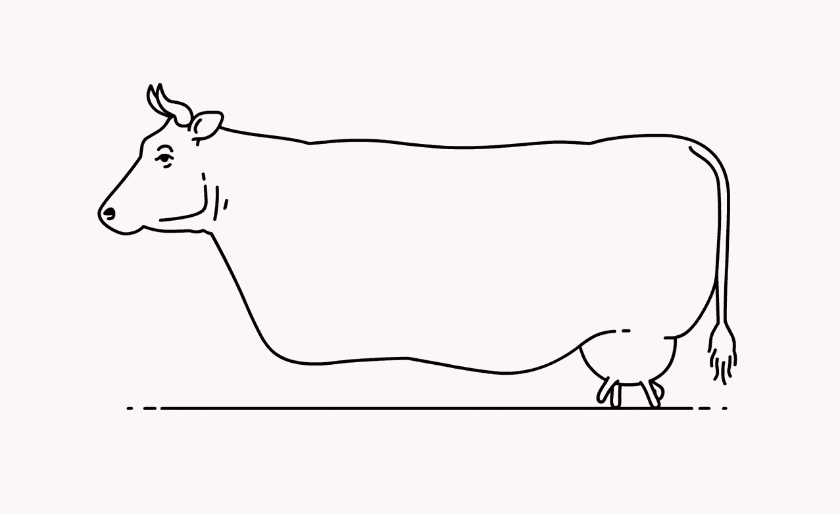

-kiedy powstała - 1995 rok
-dlaczego jest to język skryptowy - Nie musi zostać skompilowany do kodu maszynowego, aby można było zobaczyć efekty jego działania.
-gdzie jest wykonywany JS (kliet lub serwer)
-dlaczego jest to bezpieczne narzędzie -czy jest to język obiektowy , jeśli tak to dlaczego. -
.................................wytłumaczenie...........................................................................................
window.open("obraz.html","okienko","toolbar=no,directories=no,menubar=no,height=280,width=160,top=200,left=200");
.................................wytłumaczenie...........................................................................................
toolbar=no - wartość yes lub no (1 lub 0): pokazuje lub ukrywa standardowy pasek narzędzi
wytłumaczenie directories=no,
- wartość yes lub no (1 lub 0): pokazuje lub ukrywa przyciski katalogów
wytłumaczenie menubar=no,- wartość yes lub no (1 lub 0): pokazuje lub ukrywa menu przeglądarki
wytłumaczenie height=280,- wartość w pixelach (1 lub 0): ustawia wysokość okna
wytłumaczenie width=160, - wartość w pixelach (1 lub 0): ustawia szerokość okna
wytłumaczenie top=200,- wartość w pixelach : ustawia położenie okna względem góry ekranu
wytłumaczenie left=200- wartość w pixelach : ustawia położenie okna względem lewej strony ekranu
wytłumaczenie
